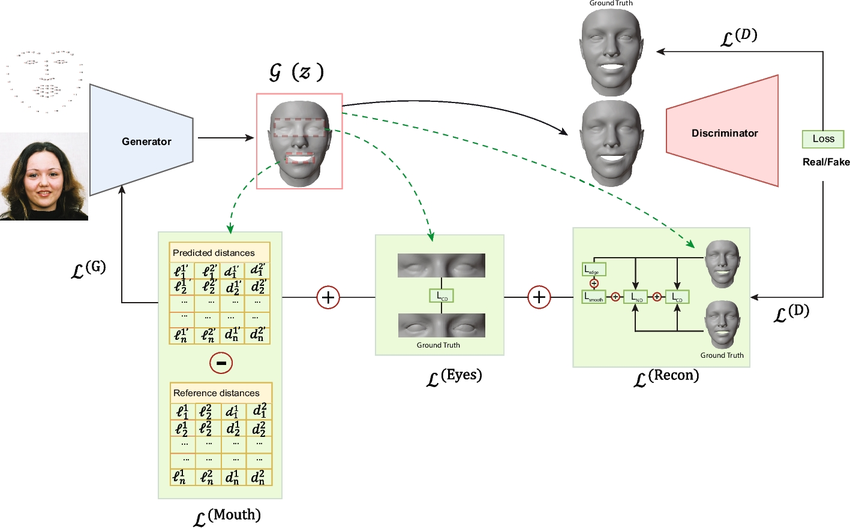
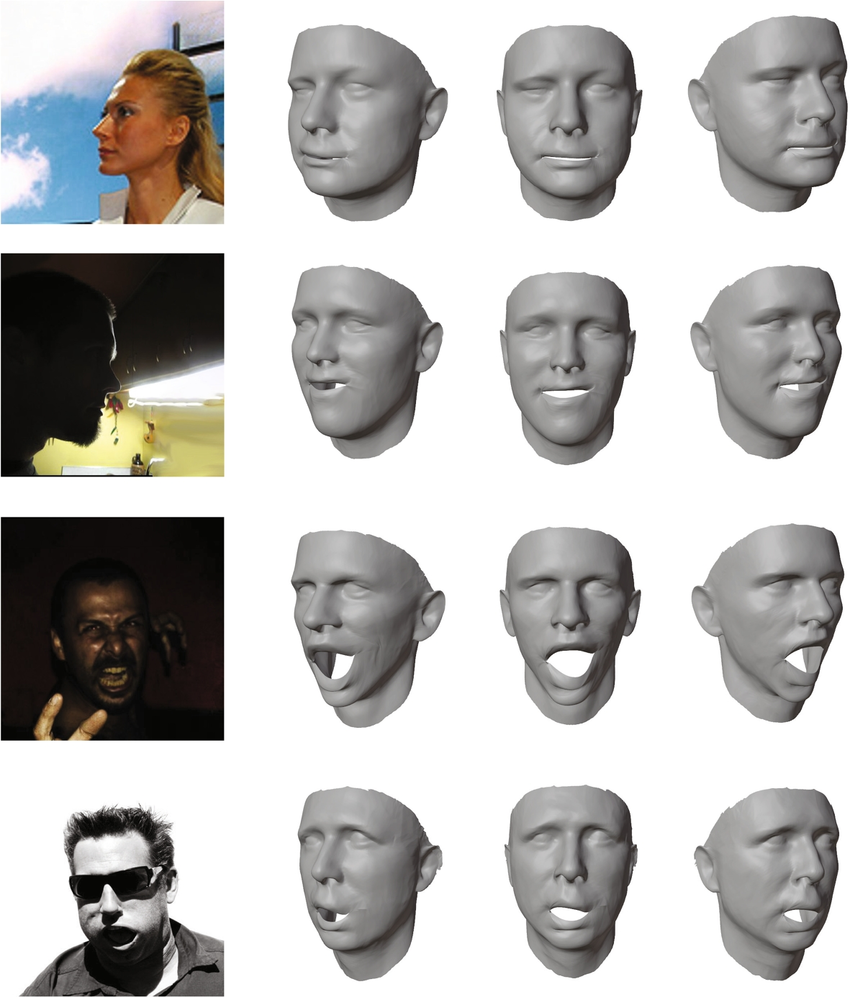
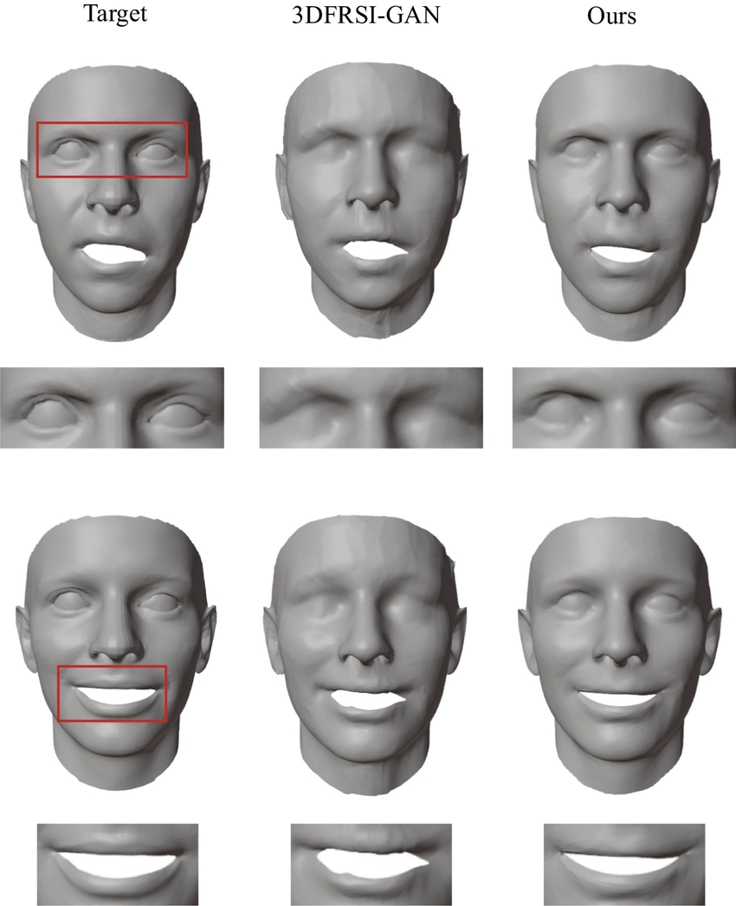
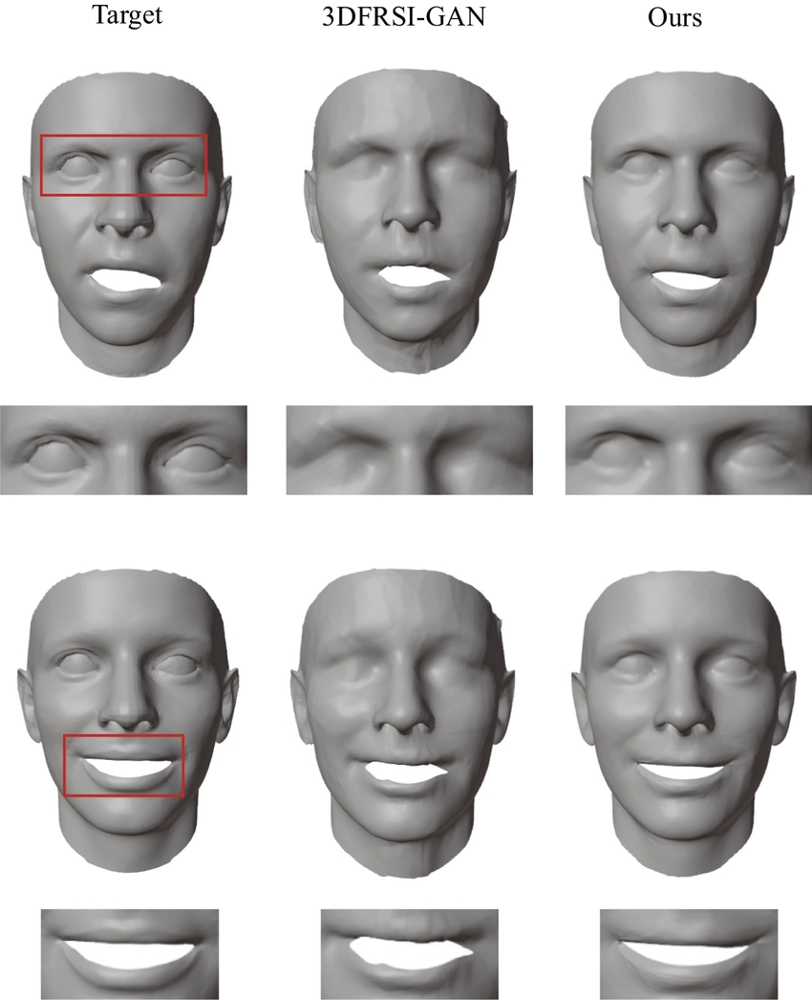

[Paper]
MPF-GAN - Multiple Part Face reconstruction GAN.
Abstract
In this article, we address the challenge of accurate 3D face reconstruction by proposing an enhanced architecture. We observe that using a single error calculation formula for the entire face leads to precise reconstruction of certain parts at the expense of others, particularly the eyes and mouth. We introduce a multi-task learning approach to address this issue, allowing our model to train on multiple data types. We propose a new analytical solution for mouth shape identification and its integration into the loss function optimization process. This solution resolves a problem that was often difficult to model in previous works accurately and has demonstrated improved reconstruction performance. In our research, we have also created and made available a new dataset for 3D face reconstruction. This dataset is unique as it focuses on different facial parts. The results show that our multi-task learning approach significantly improves the loss function for delicate facial parts, thus enhancing the quality of reconstruction in these specific areas.
Method Overview
Results
Single-Image Reconstruction
Comparisons
 

Paper
3D face reconstruction from single image with generative adversarial networks
Mehdi Malah, Mounir Hemam and Fayçal Abbas
@article{malah20233d,
title={3D face reconstruction from single image with generative adversarial networks},
author={Malah, Mehdi and Hemam, Mounir and Abbas, Fayçal},
journal={Journal of King Saud University-Computer and Information Sciences},
volume={35},
number={1},
pages={250--256},
year={2023},
publisher={Elsevier}}Paper
MPF-GAN: an enhanced architecture for 3D face reconstruction
Mehdi Malah, Fayçal Abbas, Ramzi Agaba, Dalal Bardou, Mohamed Chaouki Babahenini
@article{Malah2024,
title={MPF-GAN: an enhanced architecture for 3D face reconstruction},
author={Malah, Mehdi and Abbas, Fayçal and Agaba, Ramzi and Bardou, Dalal and Babahenini, Mohamed Chaouki},
journal={Multimedia Tools and Applications},
year={2024},
publisher={Springer}}Acknowledgements
This webpage template was originally made by Phillip Isola and Richard Zhang for a colorful project.